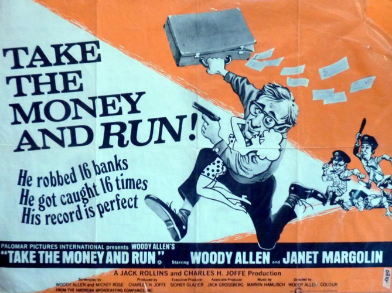
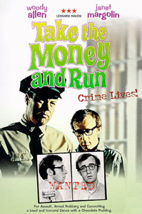
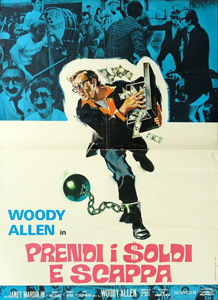
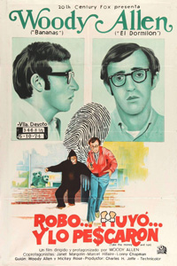
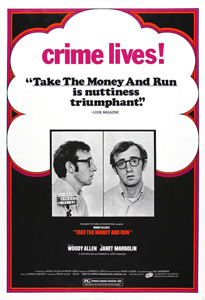
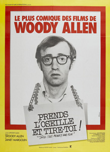
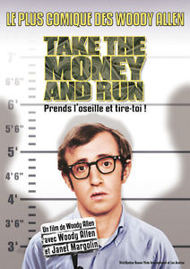

|
||||
Take The Money And Run (1969) |
||||
 |
||||
Director |
- |
Woody Allen | ||
Producers |
- |
Charles H. Joffe Jack Grossberg |
||
Screenplay |
- |
Woody Allen Mickey Rose |
||
Cinematography |
- |
Lester Short | ||
Production Designer |
- |
Fred Harpman | ||
Editors |
- |
Paul Jordan Ron Kalish |
||
Music |
- |
Marvin Hamlish | ||
Cast |
||||
Virgil Starkwell |
- |
Woody Allen | ||
Louise |
- |
Janet Margolin | ||
Fritz the Director |
- |
Marcel Hillaire | ||
Miss Blair |
- |
Jacquelyn Hyde | ||
Jake the Convict |
- |
Lonny Chapman | ||
Al, the Bank Robber |
- |
Jan Merlin | ||
Chain Gang Warden |
- |
James Anderson | ||
Fred |
- |
Howard Storm | ||
Vince |
- |
Mark Gordon | ||
Frank |
- |
Micil Murphy | ||
Joe Agneta |
- |
Minnow Moskowitz | ||
The Judge |
- |
Nate Jacobson | ||
Farm House Lady |
- |
Grace Bauer | ||
Mother Starkwell |
- |
Ethel Sokolow | ||
Father Starkwell |
- |
Henry Leff | ||
Julius Epstein the Psychiatrist |
- |
Dan Frazer | ||
Michael Sullivan |
- |
Mike O'Dowd | ||
Kay Lewis |
- |
Louise Lasser | ||
Plot |
||||
Virgil Starkwell's story is told in documentary style, using both stock footage and interviews with people who knew him. The film shows Starkwell entering a life of crime at a young age. As a child, Virgil was a frequent target of bullies, who would snatch his glasses and stomp them on the floor. As an adult, Virgil is inept and unlucky, and both police and judges both ridicule him by stamping on Virgil's glasses. Starkwell is arrested for trying to rob a bank after passing to a teller a threatening note that misspells the word "gun". Sent to prison, Virgil attempts escape using a bar of soap carved to resemble a gun. Unfortunately for Virgil, it was raining outside and his gun melts. Starkwell does escape prison, but by accident. |
||||
Filming |
||||
This was the first film to be solely directed by Allen. He had originally wanted Jerry Lewis to direct, but when that did not work out, Allen decided to direct it himself. This decision to become his own director was partially spurred on by the chaotic and uncontrolled filming of Casino Royale, in which he had appeared two years previously. This film marked the first time Allen would perform the triple duties of writing, directing, and acting in a film. The manic, almost slapstick style is similar to that of Allen's next films, including Bananas and Sleeper. Allen initially filmed a downbeat ending in which he was shot to death, courtesy of special effects from A.D. Flowers. Reputedly the lighter ending is due to the influence of Allen's editing consultant, Ralph Rosenblum, in his first collaboration with Allen. |
||||
Filming Locations |
||||
| The film was shot on location in San Francisco, including one scene set in Ernie's restaurant, whose striking red interior was immortalized in Alfred Hitchcock's Vertigo (1958). Other scenes were filmed at San Quentin State Prison, where 100 prisoners were paid a small fee to work on the film. The regular cast and crew were stamped each day with a special ink that glowed under ultra-violet light so the guards could tell who was allowed to leave the prison grounds at the end of the day. | ||||
Music |
||||
Soul Bossa Nova |
- |
Quincy Jones | ||
Reviews |
||||
"Rosenblum even suggested the use of New Orleans jazz on the soundtrack, which became a staple of future Allen projects." - David Parkinson : Empire Magazine "Woody Allen's Take the Money and Run has some very funny moments, and you'll laugh a lot, but in the last analysis it isn't a very funny movie." - Roger Ebert : Chicago Sun-Times |
||||
Additional Artwork |
||||
   |
|
|||
   |
||||